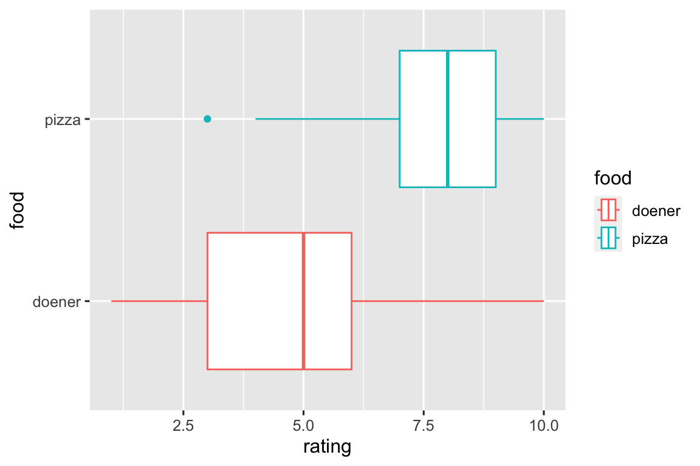

library(tidyverse)
random_integers = function(n, mean_val, sd_val)
{
min_value <- 1
max_value <- 10
# Generate n random numbers from a normal distribution
rns <- rnorm(n, mean = mean_val, sd = sd_val)
# Round to the nearest integer
rints <- round(rns)
# Ensure values are within the specified range
ints <- pmin(pmax(rints, min_value), max_value)
return(ints)
}Week 3: T-tests
Goals
The goal of this activity is to learn how to run a t-test in R, and how to report the results, also using R.
Set up
Step 1 For set up, run the following code in an R script (to open an R script, go to File, New File and click R Script. We are calling (as in activating) our library tidyverse which has some functions we will need that are not included in base R. Also be sure that a function called “random_integers” appears in your Global Environment.
1: Let’s collect data! Which food is better?
For this activity, we are going to collect and record real data! Let’s say we want to know if people in this room and that we know like pizza or döner better. To collect the data, let’s take a survey. On a scale of 1-10, with 10 being the best, how much do you like a) pizza and b) döners? For me, pizza is a 9 and döners are a 7. We can document this result in many ways, but I’ll show you two:
In R
I could code the actual data cell by cell in R, like the following code:
food_ratings = data.frame(
subject = c("Kyle"),
pizza_rating = c(9),
doener_rating = c(7)
)This is less than ideal, because it’s easy to make a mistake and tedious.
Uploading data from a .csv file
We can also load data into R using a .csv file from a spreadsheet. For now, you need to make sure that the spreadsheet file is in the same folder as your Rmarkdown file. It’s also possible to read files from other digital locations, such as other folders on your computer or online. The code below reads a .csv file called “food_rating_data.csv”. For now, it just has my data.
food_ratings = read.csv("food_rating_data.csv")
#> Warning in read.table(file = file, header = header, sep = sep, quote =
#> quote, : incomplete final line found by readTableHeader on
#> 'food_rating_data.csv'Let’s collect more data now! Together, we will add to this document and update our data.
set.seed(123)
# simulated data for now
food_ratings = data.frame(n = 100, pizza_rating = random_integers(n = 100, mean_val = 8, sd_val = 2),
doener_rating = random_integers(n = 100, mean_val = 5, sd_val = 2))
First, let’s take visualize the ratings with a boxplot.
# simulated data for now
food_ratings %>%
pivot_longer(cols = 2:3, names_to = "food", values_to = "rating") %>%
mutate(food = str_remove(food, "_rating")) %>%
ggplot(aes(x = rating, y = food, color = food)) + geom_boxplot()

Our simulated data suggests that pizza is more beloved than döners are, but we should test this discovery. Let’s use a paired t-test to do so! To run a t-test, we can use the t.test function in R. This function runs this inferential statistical test using two columns from the dataframe food_ratings. In linguistics and the social sciences, the difference is said to be “statistically significant” if the p value returned by the t-test is smaller than .05.
t.test(food_ratings$pizza_rating, food_ratings$doener_rating, paired = TRUE)When we run the code and get the result, we can see a lot of information: Firstly, the p-value is: p-value < 2.2e-16. This corresponds to .00000000000000022, which is certainly smaller than our significance threshold of .05. We can abbreviate this to p < .05. When you report a t-test in APA format, one must report: the t-value, degrees of freedom (df) and the p-value. For example;
The difference was significant: t(99) = 13.1, p < .05.
However, it would be best to report additional information. All the p-value from the t-test shows us is whether or not we can reject the null hypothesis. In other words, it just says that the difference between the two levels of comparison is not 0. Most likely, we also want to know the size and direction of an effect, in addition to its statistical significance. As a result, a more complete way to report a t-test is as follows:
A paired-samples t-test was conducted to compare the ratings of pizza and döners by the same individuals. There was a significant increase in ratings from döner (M = 4.76, SD = 1.92) to pizza (M = 8.06, SD = 1.58); t(99) = 13.1, p < .05, d = 1.9.
This paragraph is much better for both the information given to the reader and for science at large. First, it tells us the direction of the effect - pizza is more liked than döners, and it tells us the size of the effect (d = 1.89; a large effect). The code below shows how the means, standard deviations and the effect size were calculated:
food_ratings %>% # means and sds
pivot_longer(cols = 2:3, names_to = "food", values_to = "rating") %>%
mutate(food = str_remove(food, "_rating")) %>%
group_by(food) %>%
summarize(mean_r = mean(rating), sd_r = sd(rating))
mean_difference = 8.06-4.76
pooled_sd = mean(c(1.91, 1.57))# effect size
effect_size = mean_difference/pooled_sdGroup Problems:
Let’s work together to gather data. Enter your own ratings for pizza and döner here: https://docs.google.com/spreadsheets/d/16xlSlcETH_-ssWLWP6cULw8FfEhpVZcxWLR2JAz-Pac/edit?usp=sharing
Also, feel free to send a quick text asking someone you know what their ratings are. For ’subject`, enter a text id of some kind as you prefer, as long as it is unique to all others.
Once we collect the data, work in groups to duplicate the analysis pipeline above in an R script. Come up with at least the simple report (first block quote), and try for the complete one (second block quote).